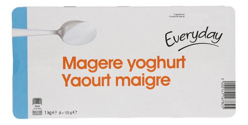
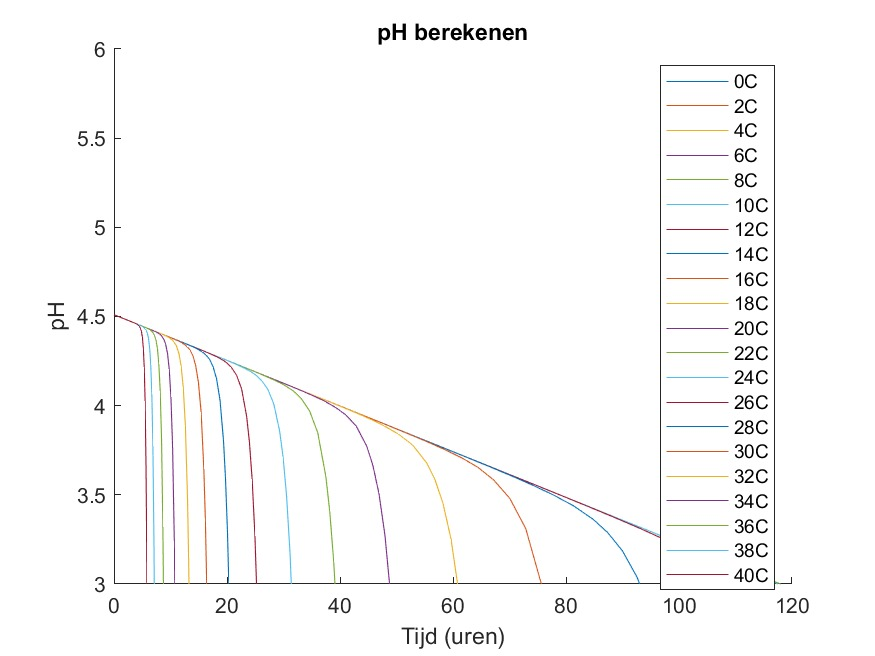

Magere Yoghurt

De oorsprong van yoghurt
Yoghurt bestaat al duizenden jaren en werd vermoedelijk per ongeluk ontdekt door nomadische volkeren. Zij bewaarden melk in dierenhuiden, waardoor door de warme omgevingstemperatuur een spontaan fermentatieproces op gang kwam. Zo ontstond een dikkere, zure vloeistof die langer houdbaar en beter verteerbaar was dan melk.
Pas in de twintigste eeuw werd yoghurt wetenschappelijk bestudeerd en ontwikkeld tot een industrieel voedingsproduct. Wetenschappers optimaliseerden bacterieculturen, temperaturen en productieprocessen, waardoor yoghurt uitgroeide tot het alledaagse product dat vandaag wereldwijd geconsumeerd wordt.
De culturele impact van yoghurt
Yoghurt is intussen een vast onderdeel van het ontbijt van veel mensen, ook in België. Daarnaast wordt het gebruikt in sauzen, dips en gerechten uit diverse keukens. Het is daardoor stevig verankerd in het wereldwijde culinaire landschap.
Ons product
Deze grafiek voorspelt het pH-verloop van yoghurt aan de hand van de actieve aanwezige bacteriën. Een pH van onder 4,1 zien wij als vervallen yoghurt. Andere indicatoren voor slechte yoghurt zijn bijvoorbeeld schimmel, gisting en stank.
